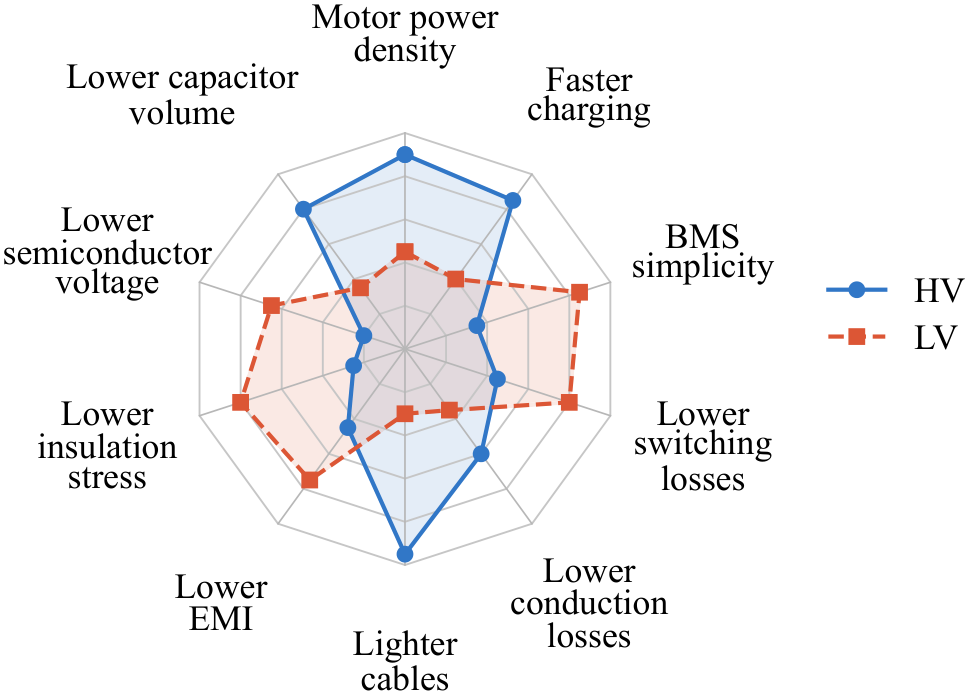
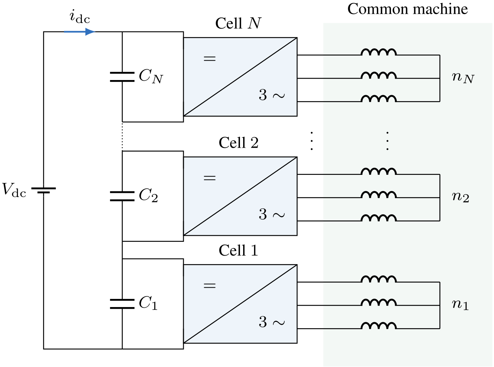
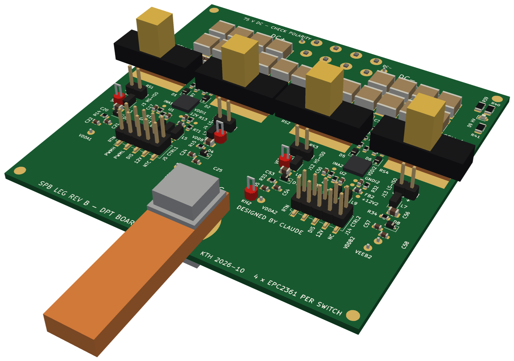
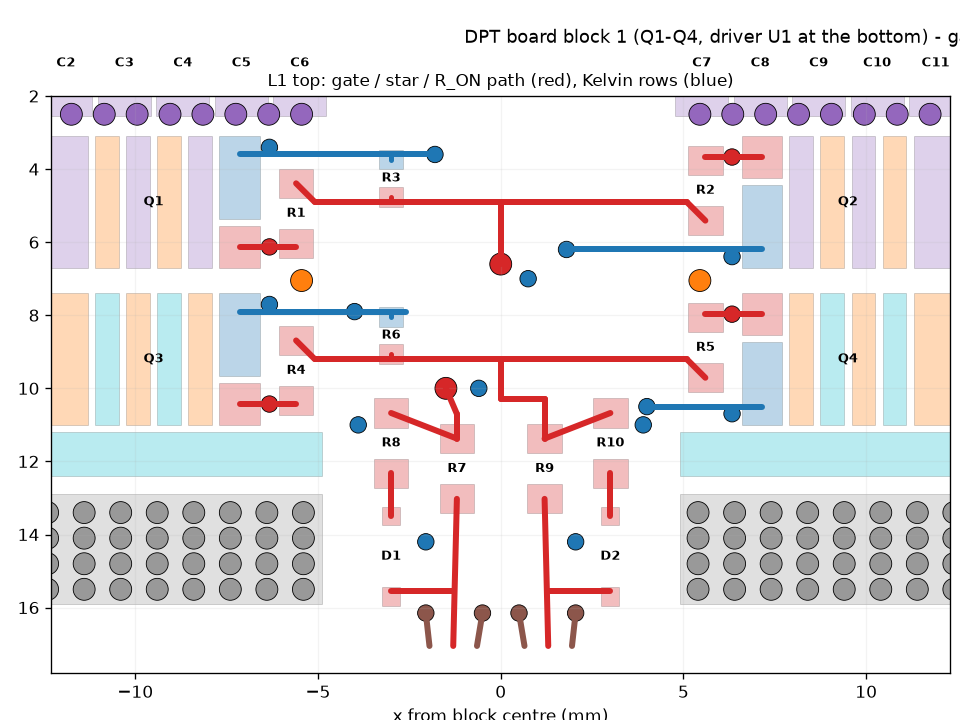

Low-voltage GaN for a 1200 V traction drive: the SPB building block
Why we stack 100 V GaN instead of using 1200–1700 V devices, our first EPC2361 design, and the paralleling and gate-drive problems where we would like your view.
Traction is moving to higher DC-link voltage

High voltage helps the vehicle (charging, cables, motor). It hurts the semiconductors: higher blocking voltage, higher switching loss, more insulation stress. SPB tries to keep both sides of this chart.
Charging: current and cable loss
| Example | DC link | Power |
|---|---|---|
| Infineon eCAV platform | 800 V | 250 kW |
| TI / Wolfspeed reference design | 800 V | 300 kW |
| Porsche Taycan Turbo S | 800 V class | 700 kW (launch) |
| Lucid Air Dream Performance | 924 V | 828 kW |
| KTH SiC prototype 1, 2 kV modules (IEEE Access) | 1.2 kV | 250 kW |
| KTH SiC prototype 2, 1.7 kV eTruck modules | 1.2 kV | ≈ 300 kW |
Megawatt Charging System up to 1250 V. Our 1.2 kV study: 56 % less cable conduction loss or 33 % less cable mass than 800 V for heavy-duty charging.
In a two-level inverter every switch blocks the whole link
Empirical device fits from Azurza Anderson et al., IEEE OJPEL 2020: Ron,sp = kRUBαR, Coss,Q,sp = kCUBαC. The R·C product does not depend on die area.
For a converter with N stacked cells, the minimum semiconductor loss scales with Vdc·√(Ron,spCoss,sp) of the device class each cell needs. Split the 1200 V link and see which class you land in:
- Two-level 1200 V needs 1700–2000 V SiC (our two prototypes used 2 kV and 1.7 kV modules).
- Within each technology, lower blocking voltage gives lower loss; GaN at 100 V is the best point in the fits.
- The gain is paid in device count: 6·N·np transistors.
Stacked polyphase bridges: split the voltage and the machine

Each cell is a standard two-level three-phase bridge. Cells are in series on the DC side; each feeds its own three-phase winding set. Proposed at KTH (Norrga et al., 2013).
| Device voltage | Machine port | Building block | |
|---|---|---|---|
| Two-level | full Vdc | one 3-phase | one bridge |
| NPC / T-type | Vdc/2 | one 3-phase | clamped legs |
| Flying capacitor | Vdc/(L−1) | one 3-phase | legs + flying caps |
| SPB | Vdc/N | N separate sets | identical 2-level cell |
Why it suits GaN: every cell is a small, low-voltage half-bridge problem, the one GaN is best at. The design effort goes into one building block that is repeated.
Among real parts, 100 V GaN has the lowest RDS(on)·Coss
With the best number of parallel devices, the minimum of conduction plus Coss loss of an SPB scales with √(RDS(on)·Coss,tr) for any voltage class. EPC2361: τ = 1.35 ps. Click a device or move the hypothetical part:
| Device | V | R mΩ | Coss,tr pF | τ ps | loss rel. |
|---|
Lower semiconductor loss, many more parts
Inverter loss at rated power
Not the same boundary: both SiC numbers are measured inverters (calorimetric, 1.2 kV DC link; prototype 2 map 99.3–99.7 % over 5–20 kHz, 50–200 Arms, 4.14 L, ≈ 72 kW/L); the SPB number is the screening model (conduction 601 W, switching 238 W, dead time 22 W, gate 3.4 W). Capacitor, busbar and auxiliary losses are not yet in the SPB figure.
Part count for the 300 kW drive
| Two-level SiC | SPB GaN | |
|---|---|---|
| Switch positions | 6 | 96 (6 × 16) |
| Transistors | 6 modules | 384 EPC2361 |
| Gate drivers (dual channel) | 3–6 | 96 |
| Isolated gate supplies | 6 | 192 |
| DC-link capacitor banks | 1 | 16 (MLCC, 134 µF eff. per leg) |
| Winding sets | 1 | 16 |
SPB does not remove the complexity of high voltage; it moves it from the device to the number of identical cells. That is why the gate driver, its supply and paralleling decide whether the concept is practical, and why we are here.
One cell designed once, by a fixed procedure
Gate-drive concept (step 3)
- Driver on the symmetry line, star to two transistors, Kelvin return under each gate trace.
- Side-mounted driver: 2.0 / 7.7 nH to near and far device (Q3D). Centre star: equal loops.
- One channel cannot reach a third transistor identically in a planar layout, so paralleling scales in pairs.
- 2EDF7275K, +5 / −1 V split from one 6 V isolated rail.
Why 4 in parallel (step 4)
- 1 → 2 devices gives the large loss gain; 3 adds little but needs a second driver channel.
- The 300 kW target uses two 150 kW blocks per leg: 4 × EPC2361 per switch, 2 drivers per leg.
- Leg loss 18.0 W at 50 kHz: conduction 12.5 W, switching 5.0 W, dead time 0.46 W, gate 0.07 W.
From one cell to a four-parallel leg board



Rev A block. 2 × EPC2361 per switch, centre driver, mirrored cells. 0.374 nH per cell in the ideal Q3D geometry.
Rev B double-pulse board. 4 × EPC2361 per switch, 2 × 2EDF7275K (one channel per pair), shunt per cell, 1200 V spacing to the control side, 89.5 × 85.2 mm, 4 layers.
Gate star. Gate on L1, Kelvin return directly under it, a Kelvin via in every source pad.
75 V on a 100 V device leaves 25 V for the loop
- Each transistor sees its own cell loop; paralleling shares the di/dt, not the inductance, so the loop is quoted per cell.
- di/dt per cell in our simulations: 23–36 A/ns at turn-off, up to 50 A/ns with low Rg.
- The loop includes the MLCC ESL but not the package; the real value will be higher.
Slow switching hides asymmetry, fast switching exposes it
- Gate-loop mismatch delays one gate by ≈ ΔLG/RG while the current rise lasts ≈ RG·C: its effect falls with 1/RG2.
- A Vth spread delays the gate in proportion to RG, so slowing down does not remove it.
- We want fast switching, so symmetry must come from layout and device matching.
Calibrated to LTspice (75 V, 2 Ω): 2 vs 8 nH → 19 %, ΔVth 0.3 V → 7 %. Eon(Rg, I) from the single-device sweep at 2 and 10 Ω. Waveform shape is illustrative.
Which parasitic moves the switching energy
| Case | Idiff | Eon Q1/Q2 µJ |
|---|
Two EPC2361, low-side double pulse, 75 V, 120 A total, RG 2 Ω. Idiff = (I1−I2)/(I1+I2) at the turn-on peak (EPC AN020). Static sharing after 8 µs is 59–60 A per device in every case.
Four cells, one AC bolt: the outer cells see 15 nH more
LTspice with the Q3D Lx model, 80 V. The two-bolt case uses an assumed equal 20 nH take-off per cell until the redrawn board is extracted. Loop per cell is 0.644–0.648 nH, so the problem is the shared AC path, not the commutation loop.
One driver channel for several transistors runs out of sink current
Ipk = (5 V − Voff) / (Rpd + (RG,int + Rext)/n), RG,int = 0.4 Ω. 2EDF7275K: 0.35 Ω typ. / 0.75 Ω max pull-down, 8 A peak sink.
Sharing one channel costs switching energy
- Output resistance per transistor grows with n: Eon +16 / +31 / +60 % for 3 / 4 / 6 transistors.
- We drive pairs: 4 per switch needs 2 channels, so the inverter needs 96 drivers and 192 isolated supplies.
- We would rather not add a driver per pair: one driver that sinks 15–20 A cleanly could drive all four transistors of a switch.
The Miller bump is about 1 V whatever the driver does
- The bump is QGD/CGS ≈ 1.06 V and arrives in 4–6 ns: a 0.05 Ω pull-down gives 1.07 V, 0.5 Ω gives 1.12 V. Sink strength does not fix it.
- A negative off-voltage shifts the waveform down, but adds reverse-conduction loss in the dead time and pushes the undershoot toward −4 V.
- With 4 in parallel the window is narrow: −1.7 V ± 0.3 V.
16 cells at 100 V, or 8 cells at 200 V?
Today: EPC2361, 100 V, 0.75 mΩ typ., 75 V per cell, 16 cells. A 200 V device runs at 150 V per cell and halves the cells, drivers and isolated supplies. Set the 200 V device:
- Conduction per phase ∝ N·RDS(on)/n: equal at 4 per switch when R200 = 2·R100 = 1.5 mΩ.
- Coss loss ∝ N·Coss·V2·fsw·n: V doubles, N halves, so Coss must also halve.
- Half the cells: half the drivers, isolated supplies and stack connections.
GaN loss grows slowly with frequency; the motor gains from it
Leg loss from the simulated leg efficiency (99.77 / 99.71 / 99.61 % at 20 / 50 / 100 kHz, 2.65 kW leg), fitted as 5.0 W + 0.053 W/kHz. Ripple relative to 20 kHz, ∝ 1/fsw; motor HF loss roughly ∝ ripple².
What slowing down costs (one EPC2361, 75 V)
Raising Rg,on from 2 to 10 Ω roughly doubles Eon; raising Rg,off above the critical ≈ 1.5 Ω makes turn-off channel-controlled and Eoff grows tenfold. Slowing down to fix sharing or the bump is expensive.
What we would like to learn
Where we are, and where Infineon parts could enter
Status
- Rev B double-pulse board released for fabrication: 4 × EPC2361 per switch, 2EDF7275K, shunt per cell. Load board and busbar wait for the double-pulse results.
- Redraw with two AC bolts in progress to remove the ±15 % turn-on split.
- Publications: 1.2 kV SiC system study (IEEE Access, accepted), SPB review (in preparation), building-block design procedure (ICPE 2027 digest).
- Open simulations: current-limited driver model, HS gate–Kelvin coupling, Q3D of the two-bolt board.
Test plan
- Double pulse at 20 → 80 V, 4 parallel, current per cell from the shunts, VGS HS/LS on MMCX ports.
- Sweep Rg,on and off-voltage, compare dynamic sharing with the model of slide 10.
Where we would welcome support
The results come from LTspice, Ansys Q3D and our analytical loss model; the Rev B board is not yet measured. The two 1.2 kV SiC prototypes are measured.